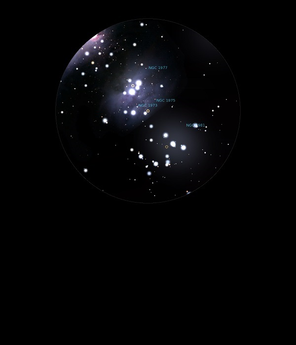

NGC 1975
Bright Nebula in Orion
NGC 1975
Mag 7.0
16/01/15
Part of the group of nebula including NGC 1977 and NGC 1973, all
of which are clearly visible in 18mm with UHC filter
This nebula does not seem to be connected to a star brighter
than Mag 9.70
10/02/16
Part of NGC 1977, The Running Man Nebula, and centred around a
nice double star, faint at Mag 9.7 but with a nice separation
The nebula may be easier to see than it's neighbour NGC 1973 due
to the faintness of these double stars
Excellent contrast in 18mm, with pin sharp views of the
stars, a fantastic eyepiece which I should use more!